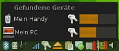
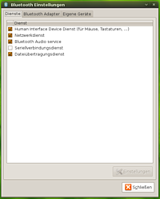

Conexión
Archivierte Anleitung
Dieser Artikel wurde archiviert, da er - oder Teile daraus - nur noch unter einer älteren Ubuntu-Version nutzbar ist. Diese Anleitung wird vom Wiki-Team weder auf Richtigkeit überprüft noch anderweitig gepflegt. Zusätzlich wurde der Artikel für weitere Änderungen gesperrt.
Zum Verständnis dieses Artikels sind folgende Seiten hilfreich:
 Conexión
Conexión  ist ein Programm, um Bluetooth-Adapter zu konfigurieren und mit dem Computer zu verbinden. Conexión ist in der Programmiersprache C# geschrieben und benötigt deshalb Mono. Dabei integriert es sich am besten in den GNOME- und Xfce-Desktop, sollte aber auch mit KDE und anderen Fenstermanagern laufen.
ist ein Programm, um Bluetooth-Adapter zu konfigurieren und mit dem Computer zu verbinden. Conexión ist in der Programmiersprache C# geschrieben und benötigt deshalb Mono. Dabei integriert es sich am besten in den GNOME- und Xfce-Desktop, sollte aber auch mit KDE und anderen Fenstermanagern laufen.
Merkmale¶
Bluetooth Geräte, die in der Nähe sind, ähnlich dem NetworkManager anzeigen
Bei Gerätebindungen wird man von Conexión zur Schlüsseleingabe aufgefordert
Conexión verwaltet, welche Geräte auf Dienste des Computers zugreifen dürfen
Geräte als "trusted" markieren
Gebundenen Geräten kann man Aliase vergeben
Mit mehreren Bluetooth-Adaptern am PC umgehen
Adapter umbenennen
Den Arbeitsmodus ändern (sichtbar, unsichtbar, aus)
Die Minor-Klasse (Desktop, Notebook, Server,...) einstellen
Dateien über das OBEX Protokoll empfangen
Installation¶
Beim SourceForge-Projekt gnome-conexion werden DEB-Pakete angeboten. Die unterstützten Ubuntuversionen und Architekturen werden aufgelistet. Nachdem man sie für die korrekte Ubuntuversion und Architektur geladen hat, müssen DEB-Pakete noch installiert werden.
Hinweis!
Fremdpakete können das System gefährden.
Bedienung¶
Nach der Installation kann man Conexión einfach über
"Anwendungen -> Systemwerkzeuge -> Bluetooth Verwaltung"
starten [2] . Alternativ kann auch der Befehl gnome-conexion im Terminal eingegeben werden [3]. Ein automatischer Start ist gewährleistet, wenn ein neuer Startprogramm-Eintrag erzeugt wird, welcher gnome-conexion ausführt [4].
|  |
| Bluetoothsymbol im Systembereich |
Nach dem Start des Programms wird ein Bluetoothsymbol im Systembereich der Kontrollleiste angezeigt. Ein Klick auf das Symbol reicht aus, um alle sich in der Nähe befindlichen Bluetoothgeräte aufzulisten. Dabei wird auf der linken Seite durch ein Symbol angezeigt, um welchen Gerätetyp es sich handelt. Durch ein Schlüsselsymbol wird darüber informiert, ob das Gerät mit dem Computer gebunden ist. Wenn Sie eine Bindung zu einem Gerät herstellen wollen, reicht ein Klick auf das entsprechende Gerät.
|  |
| Einstellungsdialog |
Weitere Einstellungen können über den Menüpunkt "Einstellungen", der im Kontextmenü des Bluetoothsymbols erreichbar ist, getroffen werden. Im Register "Dienste" kann man die Bluetoothdienste des Computers konfigurieren. Momentan werden dabei die Dieste für Eingabegeräte, Netzwerke, Serielle Verbindungen und Dateiübertragungen unterstützt.
Im Register "Adapter" kann man auswählen, welcher Bluetoothadapter am PC verwendet werden soll. Des weiteren kann man hier auch den ausgewählten Adapter auf "sichtbar", "unsichtbar" und "aus" stellen. Auch der Name des Bluetooth-Adapters und dessen Minor-Klasse (Desktop, Laptop, Server, ...) kann hier geändert werden.
Im Register "Eigene Geräte" werden die gebundenen Geräte aufgelistet. Hier können Geräte auch als vertrauenswürdig markiert werden, so dass Conexión nicht mehr um Erlaubnis fragt wenn das Gerät einen Dienst des Computers verwenden möchte. Durch einen Klick auf ein markiertes Geräte kann ein Alias vergeben werden. Wird ein leerer Alias vergeben, wird der Gerätename wieder auf den eigentlichen Namen des Geräts zurückgesetzt.

- Erstellt mit Inyoka
-
 2004 – 2017 ubuntuusers.de • Einige Rechte vorbehalten
2004 – 2017 ubuntuusers.de • Einige Rechte vorbehalten
Lizenz • Kontakt • Datenschutz • Impressum • Serverstatus -
Serverhousing gespendet von